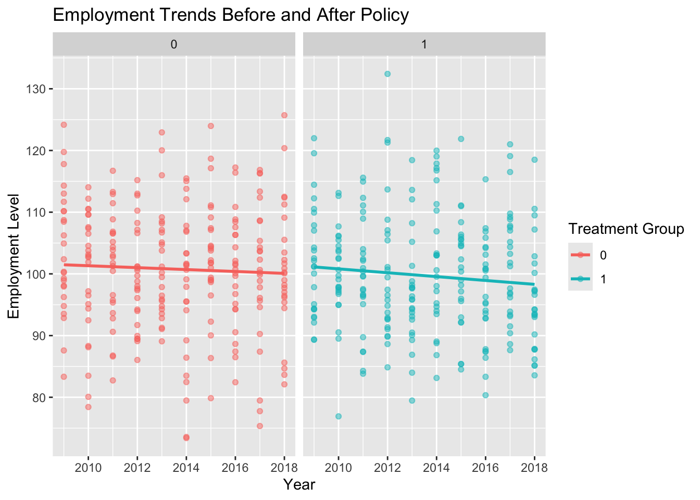
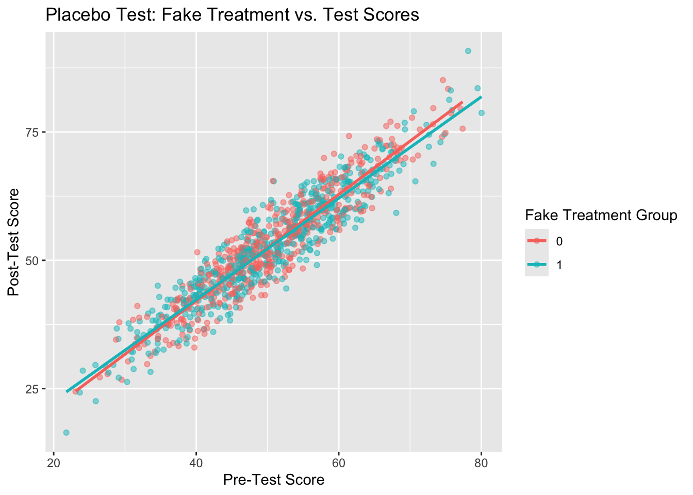
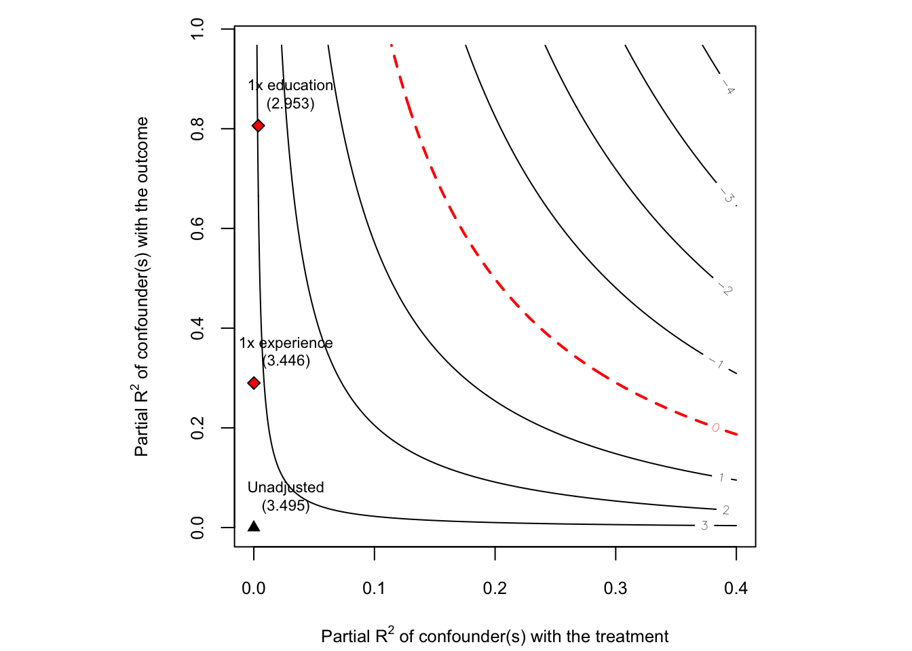

── Attaching core tidyverse packages ──────────────────────── tidyverse 2.0.0 ──
✔ dplyr 1.1.4 ✔ readr 2.1.5
✔ forcats 1.0.0 ✔ stringr 1.5.1
✔ ggplot2 3.5.1 ✔ tibble 3.2.1
✔ lubridate 1.9.4 ✔ tidyr 1.3.1
✔ purrr 1.0.2
── Conflicts ────────────────────────────────────────── tidyverse_conflicts() ──
✖ dplyr::filter() masks stats::filter()
✖ dplyr::lag() masks stats::lag()
ℹ Use the conflicted package (<http://conflicted.r-lib.org/>) to force all conflicts to become errors
Loading required package: zoo
Attaching package: 'zoo'
The following objects are masked from 'package:base':
as.Date, as.Date.numeric
See details in:
Carlos Cinelli and Chad Hazlett (2020). Making Sense of Sensitivity: Extending Omitted Variable Bias. Journal of the Royal Statistical Society, Series B (Statistical Methodology).Sensitivity Tests
Learning objectives and take aways
✅ Placebo tests ensure the estimated effect is not driven by spurious correlations. ✅ Sensitivity analyses check if conclusions remain valid under different assumptions. ✅ R provides powerful tools (e.g., EValue, sensemakr, rbounds, placebo regressions) for assessing robustness in causal inference.
1.Placebo Tests in R
Placebo tests are used to check if a treatment effect appears where it should not exist, which can indicate spurious correlation or model misspecification.
A placebo test checks if an effect appears where it should not. In Example 2, we test whether a randomly assigned treatment has a significant effect on student test scores. This helps us determine if our model incorrectly detects an effect due to statistical artifacts, confounding, or model misspecification.
Example 1: Placebo Test with Pre-Treatment Outcomes
We check if a policy or treatment has an effect before it was implemented. If significant effects are found before the actual intervention, the causal claim is questionable.
Scenario Examples: A state implements a minimum wage increase in 2018, and we estimate its effect on employment. A placebo test checks if a pre-2018 placebo treatment also shows an effect.
Code
# Simulate data
set.seed(123)
data <- tibble(
state = rep(1:50, each = 10),
year = rep(2009:2018, times = 50),
treated = ifelse(state <= 25, 1, 0), # 25 treated states
post_treatment = ifelse(year >= 2018, 1, 0), # Policy starts in 2018
employment = rnorm(500, mean = 100, sd = 10) - 2 * treated * post_treatment # Simulated policy effect
)
# Run regression for actual treatment
model_actual <- lm(employment ~ treated * post_treatment + factor(state) + factor(year), data = data)
summary(model_actual)
Call:
lm(formula = employment ~ treated * post_treatment + factor(state) +
factor(year), data = data)
Residuals:
Min 1Q Median 3Q Max
-28.7438 -6.0938 -0.2846 6.0033 29.7668
Coefficients: (2 not defined because of singularities)
Estimate Std. Error t value Pr(>|t|)
(Intercept) 103.0010 3.3976 30.315 <2e-16 ***
treated 0.4352 4.4290 0.098 0.9218
post_treatment -2.6077 2.4649 -1.058 0.2907
factor(state)2 1.3400 4.4192 0.303 0.7619
factor(state)3 -4.9918 4.4192 -1.130 0.2593
factor(state)4 2.4742 4.4192 0.560 0.5759
factor(state)5 -0.8334 4.4192 -0.189 0.8505
factor(state)6 1.4706 4.4192 0.333 0.7395
factor(state)7 0.4846 4.4192 0.110 0.9127
factor(state)8 -4.3754 4.4192 -0.990 0.3227
factor(state)9 2.3847 4.4192 0.540 0.5897
factor(state)10 3.6247 4.4192 0.820 0.4125
factor(state)11 -4.7047 4.4192 -1.065 0.2876
factor(state)12 -3.9754 4.4192 -0.900 0.3688
factor(state)13 -1.8506 4.4192 -0.419 0.6756
factor(state)14 -0.4089 4.4192 -0.093 0.9263
factor(state)15 -5.4867 4.4192 -1.242 0.2151
factor(state)16 0.5274 4.4192 0.119 0.9050
factor(state)17 2.1581 4.4192 0.488 0.6255
factor(state)18 -0.3129 4.4192 -0.071 0.9436
factor(state)19 -0.7456 4.4192 -0.169 0.8661
factor(state)20 -3.4181 4.4192 -0.773 0.4397
factor(state)21 2.3661 4.4192 0.535 0.5926
factor(state)22 -2.6689 4.4192 -0.604 0.5462
factor(state)23 -0.7415 4.4192 -0.168 0.8668
factor(state)24 -1.5179 4.4192 -0.343 0.7314
factor(state)25 -1.5951 4.4192 -0.361 0.7183
factor(state)26 -0.1501 4.4192 -0.034 0.9729
factor(state)27 1.4536 4.4192 0.329 0.7424
factor(state)28 1.6677 4.4192 0.377 0.7061
factor(state)29 0.7183 4.4192 0.163 0.8710
factor(state)30 6.1122 4.4192 1.383 0.1673
factor(state)31 -2.6271 4.4192 -0.594 0.5525
factor(state)32 0.7785 4.4192 0.176 0.8602
factor(state)33 2.3192 4.4192 0.525 0.6000
factor(state)34 -2.3832 4.4192 -0.539 0.5900
factor(state)35 -0.6556 4.4192 -0.148 0.8821
factor(state)36 -1.8980 4.4192 -0.429 0.6678
factor(state)37 1.6467 4.4192 0.373 0.7096
factor(state)38 -2.1433 4.4192 -0.485 0.6279
factor(state)39 -0.1039 4.4192 -0.024 0.9813
factor(state)40 -3.8974 4.4192 -0.882 0.3783
factor(state)41 -3.3247 4.4192 -0.752 0.4523
factor(state)42 -1.9829 4.4192 -0.449 0.6539
factor(state)43 4.3652 4.4192 0.988 0.3238
factor(state)44 -1.3018 4.4192 -0.295 0.7684
factor(state)45 -3.7068 4.4192 -0.839 0.4020
factor(state)46 1.9103 4.4192 0.432 0.6657
factor(state)47 3.8897 4.4192 0.880 0.3792
factor(state)48 1.0666 4.4192 0.241 0.8094
factor(state)49 4.3279 4.4192 0.979 0.3280
factor(state)50 NA NA NA NA
factor(year)2010 -2.9238 1.9763 -1.479 0.1397
factor(year)2011 -2.4424 1.9763 -1.236 0.2172
factor(year)2012 -2.9507 1.9763 -1.493 0.1361
factor(year)2013 -3.5011 1.9763 -1.772 0.0772 .
factor(year)2014 -2.7767 1.9763 -1.405 0.1607
factor(year)2015 -1.2810 1.9763 -0.648 0.5172
factor(year)2016 -4.3472 1.9763 -2.200 0.0284 *
factor(year)2017 -1.8373 1.9763 -0.930 0.3531
factor(year)2018 NA NA NA NA
treated:post_treatment -4.2308 2.9461 -1.436 0.1517
---
Signif. codes: 0 '***' 0.001 '**' 0.01 '*' 0.05 '.' 0.1 ' ' 1
Residual standard error: 9.882 on 440 degrees of freedom
Multiple R-squared: 0.09686, Adjusted R-squared: -0.02424
F-statistic: 0.7999 on 59 and 440 DF, p-value: 0.8544Code
# Placebo Test: Using 2016 as the fake treatment year
data$placebo_post <- ifelse(data$year >= 2016, 1, 0)
model_placebo <- lm(employment ~ treated * placebo_post + factor(state) + factor(year), data = data)
summary(model_placebo)
Call:
lm(formula = employment ~ treated * placebo_post + factor(state) +
factor(year), data = data)
Residuals:
Min 1Q Median 3Q Max
-28.7205 -6.1867 -0.1883 6.1179 29.7436
Coefficients: (2 not defined because of singularities)
Estimate Std. Error t value Pr(>|t|)
(Intercept) 102.9777 3.4122 30.179 <2e-16 ***
treated 0.4817 4.4640 0.108 0.9141
placebo_post -3.9403 2.2026 -1.789 0.0743 .
factor(state)2 1.3400 4.4262 0.303 0.7622
factor(state)3 -4.9918 4.4262 -1.128 0.2600
factor(state)4 2.4742 4.4262 0.559 0.5765
factor(state)5 -0.8334 4.4262 -0.188 0.8507
factor(state)6 1.4706 4.4262 0.332 0.7399
factor(state)7 0.4846 4.4262 0.109 0.9129
factor(state)8 -4.3754 4.4262 -0.989 0.3234
factor(state)9 2.3847 4.4262 0.539 0.5903
factor(state)10 3.6247 4.4262 0.819 0.4133
factor(state)11 -4.7047 4.4262 -1.063 0.2884
factor(state)12 -3.9754 4.4262 -0.898 0.3696
factor(state)13 -1.8506 4.4262 -0.418 0.6761
factor(state)14 -0.4089 4.4262 -0.092 0.9264
factor(state)15 -5.4867 4.4262 -1.240 0.2158
factor(state)16 0.5274 4.4262 0.119 0.9052
factor(state)17 2.1581 4.4262 0.488 0.6261
factor(state)18 -0.3129 4.4262 -0.071 0.9437
factor(state)19 -0.7456 4.4262 -0.168 0.8663
factor(state)20 -3.4181 4.4262 -0.772 0.4404
factor(state)21 2.3661 4.4262 0.535 0.5932
factor(state)22 -2.6689 4.4262 -0.603 0.5468
factor(state)23 -0.7415 4.4262 -0.168 0.8670
factor(state)24 -1.5179 4.4262 -0.343 0.7318
factor(state)25 -1.5951 4.4262 -0.360 0.7187
factor(state)26 -0.1501 4.4262 -0.034 0.9730
factor(state)27 1.4536 4.4262 0.328 0.7428
factor(state)28 1.6677 4.4262 0.377 0.7065
factor(state)29 0.7183 4.4262 0.162 0.8712
factor(state)30 6.1122 4.4262 1.381 0.1680
factor(state)31 -2.6271 4.4262 -0.594 0.5531
factor(state)32 0.7785 4.4262 0.176 0.8605
factor(state)33 2.3192 4.4262 0.524 0.6006
factor(state)34 -2.3832 4.4262 -0.538 0.5906
factor(state)35 -0.6556 4.4262 -0.148 0.8823
factor(state)36 -1.8980 4.4262 -0.429 0.6683
factor(state)37 1.6467 4.4262 0.372 0.7101
factor(state)38 -2.1433 4.4262 -0.484 0.6285
factor(state)39 -0.1039 4.4262 -0.023 0.9813
factor(state)40 -3.8974 4.4262 -0.881 0.3791
factor(state)41 -3.3247 4.4262 -0.751 0.4530
factor(state)42 -1.9829 4.4262 -0.448 0.6544
factor(state)43 4.3652 4.4262 0.986 0.3246
factor(state)44 -1.3018 4.4262 -0.294 0.7688
factor(state)45 -3.7068 4.4262 -0.837 0.4028
factor(state)46 1.9103 4.4262 0.432 0.6662
factor(state)47 3.8897 4.4262 0.879 0.3800
factor(state)48 1.0666 4.4262 0.241 0.8097
factor(state)49 4.3279 4.4262 0.978 0.3287
factor(state)50 NA NA NA NA
factor(year)2010 -2.9238 1.9795 -1.477 0.1404
factor(year)2011 -2.4424 1.9795 -1.234 0.2179
factor(year)2012 -2.9507 1.9795 -1.491 0.1368
factor(year)2013 -3.5011 1.9795 -1.769 0.0776 .
factor(year)2014 -2.7767 1.9795 -1.403 0.1614
factor(year)2015 -1.2810 1.9795 -0.647 0.5179
factor(year)2016 0.3758 1.9795 0.190 0.8495
factor(year)2017 2.8858 1.9795 1.458 0.1456
factor(year)2018 NA NA NA NA
treated:placebo_post -1.5655 1.9318 -0.810 0.4182
---
Signif. codes: 0 '***' 0.001 '**' 0.01 '*' 0.05 '.' 0.1 ' ' 1
Residual standard error: 9.897 on 440 degrees of freedom
Multiple R-squared: 0.09398, Adjusted R-squared: -0.0275
F-statistic: 0.7736 on 59 and 440 DF, p-value: 0.8878Code
# Visualizing results
ggplot(data, aes(x = year, y = employment, color = as.factor(treated))) +
geom_point(alpha = 0.5) +
geom_smooth(method = "lm", se = FALSE) +
facet_wrap(~treated) +
labs(title = "Employment Trends Before and After Policy",
x = "Year", y = "Employment Level",
color = "Treatment Group")`geom_smooth()` using formula = 'y ~ x'
Interpretation: If the placebo treatment (2016) shows a significant effect, it suggests that trends or confounding factors, not the actual policy, might be driving results. If no effect is found, it supports the credibility of the causal effect estimated from the actual policy change.
Example 2: Placebo Test with Fake Treatment Groups
This placebo test ensures that the observed effect isn’t due to random chance by testing a fake, randomized treatment assignment.
Scenario: We analyze the effect of an education program on students’ test scores, but we randomly assign treatment as a placebo test.
Expanded Explanation:
A real education program is tested to see if it improves student test scores. We run a placebo test where treatment is randomly assigned to see if the model falsely detects an effect. If the placebo treatment appears significant, our original causal claim is likely biased.
Why Randomly Assigning the Treatment is a Placebo Test True Treatment vs. Fake Treatment: In a real study, a policy or intervention (e.g., an education program) is assigned to students based on specific criteria. In a placebo test, we replace the real assignment with a completely random assignment. Key Idea: If our model finds a significant effect for a randomly assigned treatment, it suggests our original results may be driven by spurious correlations or bias rather than a true causal effect. Expected Outcome: A valid causal model should show no significant effect for a placebo (randomly assigned) treatment. If the placebo treatment is significant, it suggests our main analysis may be biased (e.g., due to confounding, model errors, or random chance).
Code
# Simulate Data
set.seed(456)
data <- tibble(
student_id = 1:1000,
treated_real = sample(0:1, 1000, replace = TRUE), # Real treatment
treated_placebo = sample(0:1, 1000, replace = TRUE), # Fake treatment
pre_score = rnorm(1000, 50, 10), # Pre-treatment test scores
post_score = pre_score + treated_real * 5 + rnorm(1000, 0, 3) # Treatment adds 5 points on avg
)
# Real treatment effect
model_real <- lm(post_score ~ treated_real + pre_score, data = data)
summary(model_real)
Call:
lm(formula = post_score ~ treated_real + pre_score, data = data)
Residuals:
Min 1Q Median 3Q Max
-10.149 -1.991 0.069 1.907 11.665
Coefficients:
Estimate Std. Error t value Pr(>|t|)
(Intercept) -0.669861 0.478638 -1.4 0.162
treated_real 5.192764 0.182868 28.4 <2e-16 ***
pre_score 1.009045 0.009113 110.7 <2e-16 ***
---
Signif. codes: 0 '***' 0.001 '**' 0.01 '*' 0.05 '.' 0.1 ' ' 1
Residual standard error: 2.891 on 997 degrees of freedom
Multiple R-squared: 0.9292, Adjusted R-squared: 0.9291
F-statistic: 6543 on 2 and 997 DF, p-value: < 2.2e-16Code
# Placebo test: Fake treatment group
model_placebo <- lm(post_score ~ treated_placebo + pre_score, data = data)
summary(model_placebo)
Call:
lm(formula = post_score ~ treated_placebo + pre_score, data = data)
Residuals:
Min 1Q Median 3Q Max
-11.2109 -2.7614 0.0739 2.8359 12.2893
Coefficients:
Estimate Std. Error t value Pr(>|t|)
(Intercept) 1.97996 0.64436 3.073 0.00218 **
treated_placebo -0.26389 0.24592 -1.073 0.28350
pre_score 1.00997 0.01225 82.449 < 2e-16 ***
---
Signif. codes: 0 '***' 0.001 '**' 0.01 '*' 0.05 '.' 0.1 ' ' 1
Residual standard error: 3.886 on 997 degrees of freedom
Multiple R-squared: 0.8721, Adjusted R-squared: 0.8718
F-statistic: 3399 on 2 and 997 DF, p-value: < 2.2e-16Code
# Set seed for reproducibility
set.seed(456)
# Generate simulated data
data <- tibble(
student_id = 1:1000,
treated_real = sample(0:1, 1000, replace = TRUE), # True treatment assignment
treated_placebo = sample(0:1, 1000, replace = TRUE), # Fake (random) treatment
pre_score = rnorm(1000, 50, 10), # Pre-treatment test scores
post_score = pre_score + treated_real * 5 + rnorm(1000, 0, 3) # True treatment adds 5 points
)treated_real: This represents the actual education program assignment. treated_placebo: This is a randomly assigned treatment (placebo). pre_score: Students’ scores before the program. post_score: Students’ scores after the program, where the real treatment increases scores by 5 points on average.
Step 2: Run the Real Treatment Model
Code
# Analyze the effect of the real treatment
model_real <- lm(post_score ~ treated_real + pre_score, data = data)
summary(model_real)
Call:
lm(formula = post_score ~ treated_real + pre_score, data = data)
Residuals:
Min 1Q Median 3Q Max
-10.149 -1.991 0.069 1.907 11.665
Coefficients:
Estimate Std. Error t value Pr(>|t|)
(Intercept) -0.669861 0.478638 -1.4 0.162
treated_real 5.192764 0.182868 28.4 <2e-16 ***
pre_score 1.009045 0.009113 110.7 <2e-16 ***
---
Signif. codes: 0 '***' 0.001 '**' 0.01 '*' 0.05 '.' 0.1 ' ' 1
Residual standard error: 2.891 on 997 degrees of freedom
Multiple R-squared: 0.9292, Adjusted R-squared: 0.9291
F-statistic: 6543 on 2 and 997 DF, p-value: < 2.2e-16This regression estimates the effect of the real education program. We expect a positive, significant coefficient for treated_real, since the real program increases test scores.
Step 3: Run the Placebo Test (Fake Treatment)
Code
# Analyze the effect of the fake (randomly assigned) treatment
model_placebo <- lm(post_score ~ treated_placebo + pre_score, data = data)
summary(model_placebo)
Call:
lm(formula = post_score ~ treated_placebo + pre_score, data = data)
Residuals:
Min 1Q Median 3Q Max
-11.2109 -2.7614 0.0739 2.8359 12.2893
Coefficients:
Estimate Std. Error t value Pr(>|t|)
(Intercept) 1.97996 0.64436 3.073 0.00218 **
treated_placebo -0.26389 0.24592 -1.073 0.28350
pre_score 1.00997 0.01225 82.449 < 2e-16 ***
---
Signif. codes: 0 '***' 0.001 '**' 0.01 '*' 0.05 '.' 0.1 ' ' 1
Residual standard error: 3.886 on 997 degrees of freedom
Multiple R-squared: 0.8721, Adjusted R-squared: 0.8718
F-statistic: 3399 on 2 and 997 DF, p-value: < 2.2e-16If the placebo treatment shows no effect, the original study is likely valid.
If the placebo treatment is significant, it suggests that our main analysis may be biased (e.g., by omitted variables, incorrect assumptions, or random noise).
Step 4: Visualize Results We can plot test scores before and after the placebo treatment to see if any patterns emerge.
Code
ggplot(data, aes(x = pre_score, y = post_score, color = as.factor(treated_placebo))) +
geom_point(alpha = 0.5) +
geom_smooth(method = "lm", se = FALSE) +
labs(title = "Placebo Test: Fake Treatment vs. Test Scores",
x = "Pre-Test Score", y = "Post-Test Score",
color = "Fake Treatment Group")`geom_smooth()` using formula = 'y ~ x'
If students who received the fake treatment have significantly different test scores, it suggests an issue in our model.
If the lines for placebo and non-placebo groups overlap, it means the fake treatment has no real effect, supporting the validity of our causal estimate.
Interpretation:
If the placebo treatment (randomly assigned) is statistically significant, it suggests that the main analysis may be biased. If the placebo effect is insignificant, it strengthens the validity of the causal effect estimate.
2. Sensitivity Analyses in R
Sensitivity analyses check how robust our causal conclusions are to potential violations of key assumptions (e.g., unmeasured confounding, model specification).
Example 3: Sensitivity Analysis for Unmeasured Confounding (E-value Calculation)
The E-value estimates how strong an unmeasured confounder would need to be to explain away the observed effect. We can use the E-value package.
Scenario: We estimate the effect of smoking on lung cancer and check how sensitive the result is to unmeasured confounding.
The E-value is a statistical tool used in causal inference to assess the robustness of an observed treatment effect to unmeasured confounding. It quantifies how strong an unmeasured confounder would have to be to fully explain away the observed association between treatment and outcome.
1. Why Use E-Values?
In observational studies, treatment and control groups may differ due to unmeasured confounding (e.g., socioeconomic status, genetic factors, environment). E-values help answer: How strong must an unmeasured confounder be to reduce our estimated effect to zero (null effect)?
2. How Do E-Values Work?
Suppose we estimate the effect of smoking on lung cancer and find a risk ratio (RR) of 2.5. The E-value tells us how strong an unmeasured confounder must be (in terms of association with both treatment and outcome) to fully explain away the observed RR of 2.5. If the E-value is large (e.g., 5.0), an extremely strong confounder would be needed to invalidate the result. If the E-value is small (e.g., 1.5), even a weak confounder could explain away the effect. 3. Formula for E-Value Calculation
For a risk ratio (RR) or odds ratio (OR) estimate:
4. Interpreting E-Values
E-Value Interpretation High (e.g., >4.0) ✅ Very strong confounding needed to explain away the result → The effect is robust. Moderate (e.g., 2.0 - 4.0) ⚠️ Some confounding could reduce the effect, but strong confounders are still needed. Low (e.g., <2.0) ❌ A relatively weak confounder could fully explain away the observed effect → The effect is not robust.
Assume an estimated risk ratio (RR) of 2.5 with a confidence interval (1.8, 3.2)
Code
help(package = "EValue")
EValue::evalues.RR(2.5, lo = 1.8, hi = 3.2) point lower upper
RR 2.500000 1.8 3.2
E-values 4.436492 3.0 NACode
EValue::evalues.RR(est = 2.5, lo = 1.8, hi = 3.2) point lower upper
RR 2.500000 1.8 3.2
E-values 4.436492 3.0 NAOr do it manually
Code
RR <- 2.5 # Estimated risk ratio
E_value <- RR + sqrt(RR * (RR - 1))
E_value[1] 4.436492Interpretation:
If the E-value is high (e.g., 5+), an extremely strong unmeasured confounder would be needed to fully explain away the effect. If the E-value is low (e.g., 1.5), the result is more sensitive to hidden confounding.
Example 4: Sensitivity to Model Specification (Robustness Checks)
We check if the results change under different regression specifications.
Scenario: A study examines whether a new drug reduces blood pressure.
Code
# Simulated Data
set.seed(789)
data <- tibble(
patient_id = 1:500,
treated = sample(0:1, 500, replace = TRUE),
age = rnorm(500, 50, 10),
bmi = rnorm(500, 25, 4),
blood_pressure = 120 - treated * 5 + rnorm(500, 0, 5) # Drug reduces BP by 5 units
)
# Model 1: Basic regression
model1 <- lm(blood_pressure ~ treated, data = data)
summary(model1)
Call:
lm(formula = blood_pressure ~ treated, data = data)
Residuals:
Min 1Q Median 3Q Max
-15.4700 -3.1209 -0.1249 3.2771 13.6328
Coefficients:
Estimate Std. Error t value Pr(>|t|)
(Intercept) 120.0594 0.3150 381.19 <2e-16 ***
treated -4.8644 0.4278 -11.37 <2e-16 ***
---
Signif. codes: 0 '***' 0.001 '**' 0.01 '*' 0.05 '.' 0.1 ' ' 1
Residual standard error: 4.766 on 498 degrees of freedom
Multiple R-squared: 0.2061, Adjusted R-squared: 0.2045
F-statistic: 129.3 on 1 and 498 DF, p-value: < 2.2e-16Code
# Model 2: Controlling for age
model2 <- lm(blood_pressure ~ treated + age, data = data)
summary(model2)
Call:
lm(formula = blood_pressure ~ treated + age, data = data)
Residuals:
Min 1Q Median 3Q Max
-15.3825 -3.2104 -0.1291 3.2562 13.4816
Coefficients:
Estimate Std. Error t value Pr(>|t|)
(Intercept) 119.5588 1.1514 103.834 <2e-16 ***
treated -4.8608 0.4282 -11.351 <2e-16 ***
age 0.0099 0.0219 0.452 0.651
---
Signif. codes: 0 '***' 0.001 '**' 0.01 '*' 0.05 '.' 0.1 ' ' 1
Residual standard error: 4.77 on 497 degrees of freedom
Multiple R-squared: 0.2064, Adjusted R-squared: 0.2032
F-statistic: 64.64 on 2 and 497 DF, p-value: < 2.2e-16Code
# Model 3: Controlling for age and BMI
model3 <- lm(blood_pressure ~ treated + age + bmi, data = data)
summary(model3)
Call:
lm(formula = blood_pressure ~ treated + age + bmi, data = data)
Residuals:
Min 1Q Median 3Q Max
-15.3533 -3.1962 -0.1751 3.2654 13.4810
Coefficients:
Estimate Std. Error t value Pr(>|t|)
(Intercept) 119.255805 1.674354 71.225 <2e-16 ***
treated -4.865551 0.429052 -11.340 <2e-16 ***
age 0.009542 0.021968 0.434 0.664
bmi 0.013045 0.052294 0.249 0.803
---
Signif. codes: 0 '***' 0.001 '**' 0.01 '*' 0.05 '.' 0.1 ' ' 1
Residual standard error: 4.774 on 496 degrees of freedom
Multiple R-squared: 0.2065, Adjusted R-squared: 0.2017
F-statistic: 43.04 on 3 and 496 DF, p-value: < 2.2e-16Interpretation:
- If the estimated effect remains stable across models, it suggests robustness.
- If the effect changes dramatically, it indicates sensitivity to model specification (potential omitted variable bias).
Example 5: Rosenbaum Bounds for Sensitivity to Unmeasured Confounding
We test how strong an unmeasured confounder must be to invalidate our results using the rbounds package.
Scenario: We estimate the effect of a scholarship program on college enrollment and check for unmeasured confounding.
Code
# Simulated matched dataset (outcome: enrollment, treatment: scholarship)
set.seed(111)
scholarship <- sample(0:1, 500, replace = TRUE)
enrollment <- scholarship + rnorm(500, 0, 1)
# Wilcoxon signed-rank test for matching
psens(enrollment, scholarship, Gamma = 2) # Gamma = strength of confounding
Rosenbaum Sensitivity Test for Wilcoxon Signed Rank P-Value
Unconfounded estimate .... 0.5866
Gamma Lower bound Upper bound
1 0.5866 0.5866
2 0.0000 1.0000
Note: Gamma is Odds of Differential Assignment To
Treatment Due to Unobserved Factors
Interpretation: If the effect remains significant for large values of Gamma (e.g., 2+), the results are robust. If the effect disappears for small values of Gamma (<1.2), the findings are highly sensitive to hidden bias.
Example X: Sensitivity Analysis Using the sensemakr Package in R
The sensemakr package is a powerful tool for sensitivity analysis in causal inference. It helps assess how unmeasured confounders might impact estimated treatment effects.
📌 Step 2: Simulate a Dataset We create a dataset where:
wages: Worker’s wage after training training: Binary variable (1 = received job training, 0 = no training) education: Years of education (a potential confounder) experience: Years of work experience (another potential confounder)
Here, we assume the true treatment effect of training on wages is $3 per hour.
📌 Step 3: Run the Initial Regression We estimate the impact of job training on wages, controlling for education and experience.
Code
# Set seed for reproducibility
set.seed(123)
# Simulate data: Job training impact on wages
n <- 500
training <- rbinom(n, 1, 0.5) # 50% received training
education <- rnorm(n, mean = 12, sd = 2) # Avg. 12 years of education
experience <- rnorm(n, mean = 5, sd = 2) # Avg. 5 years of experience
wages <- 20 + 3 * training + 2 * education + 1.5 * experience + rnorm(n, sd = 5) # Wage equation
# Create data frame
data <- data.frame(wages, training, education, experience)
# Fit linear regression model
model <- lm(wages ~ training + education + experience, data = data)
# Display model summary
summary(model)
Call:
lm(formula = wages ~ training + education + experience, data = data)
Residuals:
Min 1Q Median 3Q Max
-14.6127 -3.1967 0.0747 3.4101 17.0122
Coefficients:
Estimate Std. Error t value Pr(>|t|)
(Intercept) 18.5307 1.4648 12.651 < 2e-16 ***
training 3.4949 0.4445 7.862 2.38e-14 ***
education 2.2004 0.1105 19.921 < 2e-16 ***
experience 1.3084 0.1091 11.989 < 2e-16 ***
---
Signif. codes: 0 '***' 0.001 '**' 0.01 '*' 0.05 '.' 0.1 ' ' 1
Residual standard error: 4.952 on 496 degrees of freedom
Multiple R-squared: 0.5555, Adjusted R-squared: 0.5528
F-statistic: 206.6 on 3 and 496 DF, p-value: < 2.2e-16Now, check the sensitivity:
📌 Step 4: Conduct Sensitivity Analysis with sensemakr We now check if an unmeasured confounder could explain away the observed effect of training.
Code
# Perform sensitivity analysis with sensemakr
sensitivity <- sensemakr(
model = model,
treatment = "training",
benchmark_covariates = c("education", "experience"), # Use observed confounders as benchmarks
q = 1, # Assess robustness to omitted variable bias
alpha = 0.05 # Significance level
)
# Print sensitivity analysis summary
summary(sensitivity)Sensitivity Analysis to Unobserved Confounding
Model Formula: wages ~ training + education + experience
Null hypothesis: q = 1 and reduce = TRUE
-- This means we are considering biases that reduce the absolute value of the current estimate.
-- The null hypothesis deemed problematic is H0:tau = 0
Unadjusted Estimates of 'training':
Coef. estimate: 3.4949
Standard Error: 0.4445
t-value (H0:tau = 0): 7.8616
Sensitivity Statistics:
Partial R2 of treatment with outcome: 0.1108
Robustness Value, q = 1: 0.2961
Robustness Value, q = 1, alpha = 0.05: 0.232
Verbal interpretation of sensitivity statistics:
-- Partial R2 of the treatment with the outcome: an extreme confounder (orthogonal to the covariates) that explains 100% of the residual variance of the outcome, would need to explain at least 11.08% of the residual variance of the treatment to fully account for the observed estimated effect.
-- Robustness Value, q = 1: unobserved confounders (orthogonal to the covariates) that explain more than 29.61% of the residual variance of both the treatment and the outcome are strong enough to bring the point estimate to 0 (a bias of 100% of the original estimate). Conversely, unobserved confounders that do not explain more than 29.61% of the residual variance of both the treatment and the outcome are not strong enough to bring the point estimate to 0.
-- Robustness Value, q = 1, alpha = 0.05: unobserved confounders (orthogonal to the covariates) that explain more than 23.2% of the residual variance of both the treatment and the outcome are strong enough to bring the estimate to a range where it is no longer 'statistically different' from 0 (a bias of 100% of the original estimate), at the significance level of alpha = 0.05. Conversely, unobserved confounders that do not explain more than 23.2% of the residual variance of both the treatment and the outcome are not strong enough to bring the estimate to a range where it is no longer 'statistically different' from 0, at the significance level of alpha = 0.05.
Bounds on omitted variable bias:
--The table below shows the maximum strength of unobserved confounders with association with the treatment and the outcome bounded by a multiple of the observed explanatory power of the chosen benchmark covariate(s).
Bound Label R2dz.x R2yz.dx Treatment Adjusted Estimate Adjusted Se
1x education 0.0037 0.8061 training 2.9529 0.1963
1x experience 0.0001 0.2898 training 3.4460 0.3750
Adjusted T Adjusted Lower CI Adjusted Upper CI
15.0403 2.5671 3.3386
9.1888 2.7092 4.1828📌 Step 5: Visualize Sensitivity Results sensemakr provides a contour plot that shows how strong an unmeasured confounder would have to be to invalidate our conclusions.
🔍 How to Interpret the Plot:
The x-axis represents the strength of an unmeasured confounder’s association with treatment (job training). The y-axis represents its effect on the outcome (wages). If the observed effect remains above the significance threshold across plausible values, the result is robust.
Code
# Plot sensitivity results
plot(sensitivity)
Step 6: Interpret the Sensitivity Analysis Results The summary output will show:
R-squared of omitted variable needed to fully explain the effect How much the observed effect reduces under different confounding scenarios Whether the treatment effect remains significant under potential omitted variables If the sensitivity analysis shows that an extremely strong confounder is needed to nullify the effect, we can be confident in our causal estimate. If a moderate confounder could eliminate the effect, we should be cautious in our conclusions.
Rosenbaum Bounds
Rosenbaum bounds are used in sensitivity analysis for observational studies, particularly in propensity score matching. They assess how sensitive causal inferences are to potential hidden bias due to unmeasured confounders. Since observational studies lack randomized treatment assignment, unmeasured variables may affect both the treatment and the outcome. Rosenbaum bounds estimate how strong an unmeasured confounder would have to be to alter the conclusions of a study.
Concept of Rosenbaum Bounds The method introduces a sensitivity parameter, Gamma (Γ), which represents the degree of potential hidden bias:
If Γ = 1, the study is free from hidden bias, meaning matched pairs have the same probability of treatment assignment. If Γ > 1, there is potential unmeasured confounding, and the higher the value of Γ, the more sensitive the results are to hidden bias. Rosenbaum bounds use Wilcoxon signed-rank tests or Mantel-Haenszel tests to check how the significance of an estimated treatment effect changes under different levels of Γ.
Example:
I will illustrate Rosenbaum bounds with an ecological example: assessing the effect of deforestation on bird species richness. Suppose we have an observational dataset where sites with deforestation are matched to sites without deforestation based on environmental factors (e.g., elevation, precipitation).
Introduction
This document demonstrates how to perform Rosenbaum Bounds Sensitivity Analysis using R, applied to an ecological study assessing the impact of deforestation on bird species richness.
Load Required Libraries
Code
# Install packages if not already installed
if (!require(MatchIt)) install.packages("MatchIt", dependencies = TRUE)
if (!require(rbounds)) install.packages("rbounds", dependencies = TRUE)
# Load the libraries
library(MatchIt)
library(rbounds)Simulate Ecological Data
We create a dataset where bird species richness is compared between deforested and non-deforested sites while controlling for elevation and precipitation.
Code
set.seed(123)
data <- data.frame(
deforestation = rep(c(1, 0), each = 50),
species_richness = c(rnorm(50, mean = 10, sd = 3), rnorm(50, mean = 15, sd = 3)),
elevation = rnorm(100, mean = 500, sd = 100),
precipitation = rnorm(100, mean = 1000, sd = 200)
)Perform Propensity Score Matching
We match deforested and non-deforested sites based on elevation and precipitation.
Code
match_model <- matchit(deforestation ~ elevation + precipitation, data = data, method = "nearest")
matched_data <- match.data(match_model)Conduct Sensitivity Analysis with Rosenbaum Bounds
We check how sensitive our results are to hidden bias.
Code
# Extract matched treatment and control outcomes
treated_outcomes <- matched_data$species_richness[matched_data$deforestation == 1]
control_outcomes <- matched_data$species_richness[matched_data$deforestation == 0]
# Perform Rosenbaum sensitivity analysis
psens(x = treated_outcomes, y = control_outcomes, Gamma = 1.5) # Adjust Gamma to test sensitivity
Rosenbaum Sensitivity Test for Wilcoxon Signed Rank P-Value
Unconfounded estimate .... 1
Gamma Lower bound Upper bound
1 1 1
Note: Gamma is Odds of Differential Assignment To
Treatment Due to Unobserved Factors
Interpretation of Results
- If the p-value remains small at Γ = 1.5, our conclusions are robust to moderate hidden bias.
- If the p-value becomes insignificant at lower values of Γ, our study is highly sensitive to hidden confounders.
Conclusion
Rosenbaum bounds allow us to assess the robustness of our ecological study results against unmeasured confounding. This is particularly useful when controlled experiments are infeasible.
Take Aways
Rosenbaum bounds provide a way to assess how much an unmeasured confounder could influence the causal relationship between deforestation and bird species richness. In ecological studies, where controlled experiments are often impractical, this method helps gauge the reliability of observational findings.